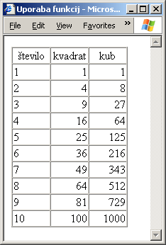

Pazite! Nekatera vprašanja so si zelo podobna. Vsako vprašanje pozorno preberite, čeprav se vam zdi, da ste nanj že odgovorili. Natančno razmislite, kakšen je pravilen odgovor, in nato natančno preberite tudi vse ponujene odgovore. Zlasti je pomembno, da se tega zavedate na izpitu. Če se vam zdi vprašanje znano, bodite še toliko bolj pozorni, da vas ne zavede.
function f(n)
{
return n >= 0 ? n : -n;
}
Kakšna bo vrednost izraza f(-10)?
function f(y)
{
if (y > 0) return y * y;
else return 0;
}
Kakšna je vrednost izraza f(x - 3), če je vrednost spremenljivke x tik pred klicem funkcije f() enaka 1?
function vsota(a, b)
{
return a + b;
}
Kako lahko z uporabo te funkcije seštejemo vrednosti spremenljivk a, b in c ter vsoto zapišemo v spremenljivko x?
function vsota(a, b)
{
return a + b;
}
Kako lahko z uporabo te funkcije seštejemo vrednosti spremenljivk a, b in c ter vsoto zapišemo v spremenljivko x?
function vsota(a, b)
{
return a + b;
}
Kako lahko z uporabo te funkcije seštejemo vrednosti spremenljivk a, b in c ter vsoto zapišemo v spremenljivko x?
function reset()
{
status = 1;
}
Podana je še koda, ki ni sestavni del nobene funkcije:
var status; reset(); document.write(status); status = 10;Kakšno vrednost bo v oknu brskalnika izpisala funkcija write()?
function stej()
{
var stevec;
stevec++;
}
Podana je še koda:
var stevec = 0; stej(); document.write(stevec);Kakšno vrednost bo v oknu brskalnika izpisala funkcija write()?
function stej()
{
stevec++;
}
Podana je še koda:
var stevec; stej(); document.write(stevec);Kakšno vrednost bo v oknu brskalnika izpisala funkcija write()?
function spremeni(j)
{
j *= 10;
}
Podana je še koda:
var j = 10; spremeni(j); document.write(j);Kakšno vrednost bo v oknu brskalnika izpisala funkcija write()?
Napišite definicijo funkcije celica(), ki bo povzročila izpis ene celice v tabeli. Funkcija naj sprejme dva argumenta. Prvi naj določa vsebino izpisane celice, drugi pa vodoravno uravnavo vsebine znotraj celice.
Za lažjo predstavo: naslednja koda naj povzroči izpis tabele, kakršnega vidimo na dnu strani:
var i;
document.write("<table border='1' cellspacing='0'>");
celica("število", "sredina");
celica("kvadrat", "sredina");
celica("kub", "sredina");
for (i = 1; i <= 10; i++)
{
document.write("<tr>");
celica(i, "levo");
celica(i * i, "desno");
celica(i * i * i, "desno");
document.write("</tr>");
}
document.write("</table>");

Če vam naloga povzroča težave, potem poizkusite najprej napisati kodo brez upoštevanja drugega argumenta, ki določa uravnavo besedila.